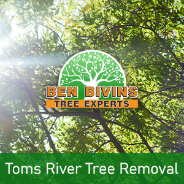
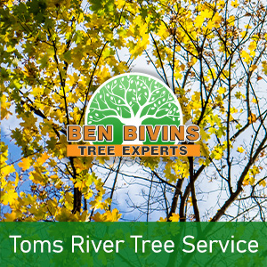

If you are searching for tree service in Toms River or tree removal in Toms River, Ben Bivins Tree Experts has you covered. Our family-owned business has been providing first class tree service to the Toms River community for years.
Toms River Tree Removal – Trust the Experts

Do you have lifeless or undesirable trees which should be removed? Tree removal can be a hazardous task that will require the right equipment and safety standards. Even though it might be appealing to remove a tree on your own from your Toms River property, it could be a choice that puts someone in danger, without having the correct training. There can be numerous reasons why you are looking for a tree removal in Toms River:- Tree is obstructing too much sunshine in your yard
- Tree is deceased or detrimental and a probable safety hazard
- Tree is too big and poses a threat if significant limbs drop
- Tree was weakened during a weather event and is past the level of saving
- You are thinking about remodeling that will eventually damage the trees
- Tree is losing too many branches, leaves, or pine needles
Ben Bivins is fully insured and qualified tree company. Please don’t take the associated risk of hiring an uninsured tree company or relying on a friend or family member to accomplish this type of job. Our staff is expertly qualified and our business holds the appropriate credentials to make certain your Toms River tree removal will be performed in the safest and most efficient possible way. Tree removal necessitates the use of heavy machinery and hazardous equipment which should only be left to the pros. Leave it to Ben Bivins Tree Experts! Call for a quote on your Toms River tree removal.
Toms River NJ Tree Service – What We Do

We carry out all aspects of Toms River tree service. Some of these services include:- Tree Trimming – Are trees in your yard growing uncontrollably? Is your lawn lacking sunlight caused by an overgrown tree? Trimming a tree’s limbs will make a big difference and may enable you to maintain a tree you in any other case considered getting rid of.
- Pruning – Keep your trees happy and healthful. Pruning involves assessing a tree’s health and making a decision to eliminate branches selectively to boost its wellness and longevity.
- Crown Reduction – We will reduce the size of your tree’s canopy with this process. Our team will evaluate your tree and make recommendations to take out specific limbs that will scale back canopy cover.
- Emergency Tree Service – Do you have a downed tree that requires urgent attention? Is there a tree that is on the verge of causing damage if it is not addressed promptly? You may be a candidate for emergency tree service.
If you’re a Toms River resident requiring tree service, Call us today. Scheduling can vary depending on weather, season and our current jobs in progress. Our representative will provide you with a quotation and inform you of date ranges available for service after assessing your particular needs.
Toms River Firewood for Sale
It’s understandable that a Toms River tree removal company may have a surplus of firewood! If you are in search of firewood for a wood burning stove or fireplace, contact us. Firewood availability can vary during the year.